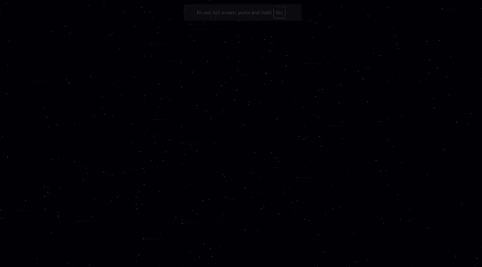
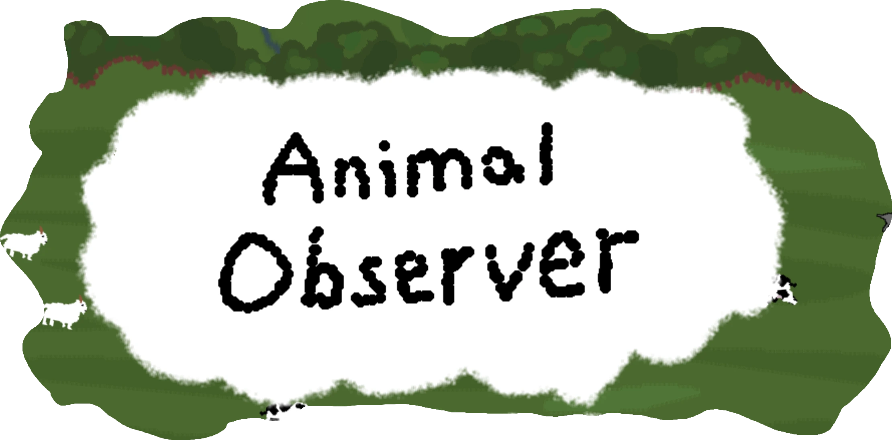
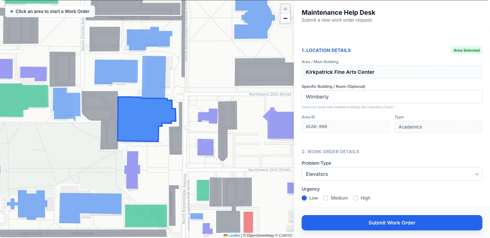
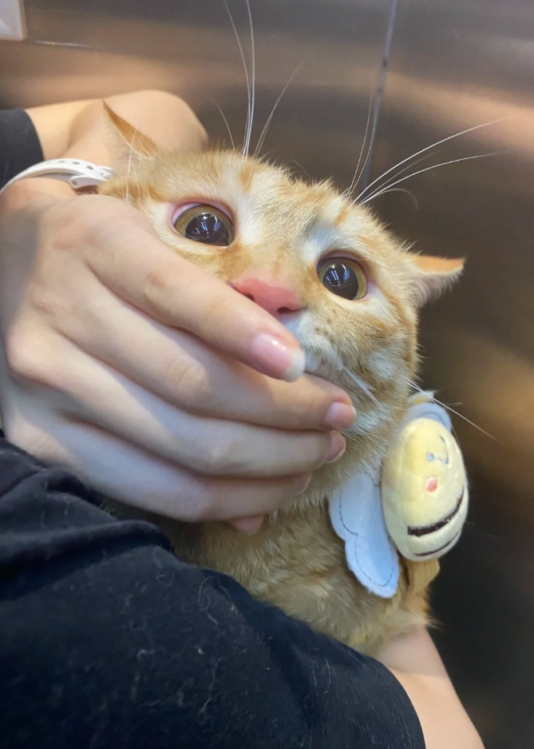
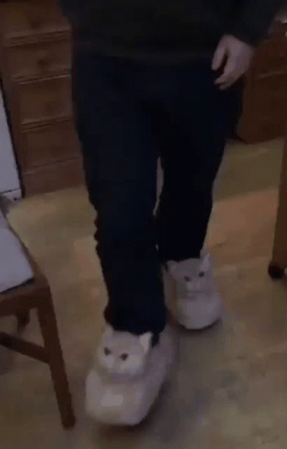

[1] RECIPEZ
Live Build: recipez.bkmcoding.com

This is Recipez, a recipe search and visualization engine. Insert ingredients and receive a recipe and recipes that are relatively close in relationship to it based on a trained 3d model. Recipez are tagged and colored based off food category and multiple models are available.
- Over 30,000 Recipes
- Search using K-NN (K Nearest Neighbors)
- Available Models: TF-IDF and SBERT (Ingredients, Recipe Names, and Both)
[2] ANIMAL OBSERVER
Live Build: animal.bkmcoding.com

A fun simple animal counting game.
Watch as nature takes its path and these animals ruthlessly fight eachother. As a researcher its your job to keep track and collect data. Watchout for distrations or else your fired.
- Animals: Cow, Sheep, Wolf, Shark, Ice Cream
- Demonstrates concepts like correlation vs causation and scientific method
Was created for scientific methods and inquiry class
[3] CAMPUSFIX

Campusfix was a project for HackOKC 2025 and received 3rd place. It is a web software designed to replace and view the old campus reporting system for issues. Users can easily submit maintenance requests with details, location information via interactive map, and file attachments and workers receive that through their own view and can easily track and finish work orders.
- Developed with a team of 5 in 24 hours
- Integrated campus map with highlighted buildings and selection
- Built in triage model for workers to auto-assign priority of work orders from low to high
- Node.JS, SQL, Hosted on Azure
CHECKOUT THIS CAT

~MMMMClick to reveal unspeakable horrors
